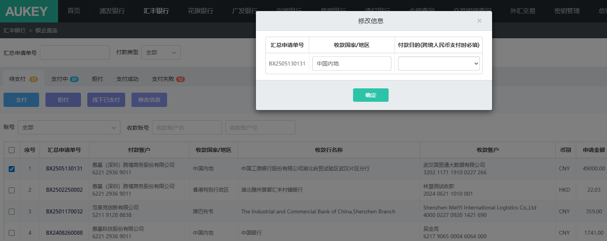

需求1：汇丰附言调整；——原因：只有汇丰付款到中国大陆和中国台湾地区支持中文附言，其他收款国家/地区不支持，需做调整限制；
【银企直连/汇丰银行/待支付】页签：
1.列表新增展示【附言】字段，位于付款目的右侧，数据源新增通过修改信息按钮调整值；（支付成功页签两个导出文件同样新增该列）
2.点击修改信息按钮打开弹窗，列表最右侧新增附言列，手工录入限制100字符，默认展示列表值；确认后修改列表附言信息；
3.支付时新增校验：当所选数据收款国家/地区不为‘中国内地’和‘台湾省’，校验附言是否含中文，若含中文则无法支付并给出提示：仅限收款国家/地区为中国内地或台湾省的支付单据，支持录入中文附言！
需求2：汇丰境外付款账户支付时改为推英文名；——原因：香港汇丰银行行内转账，出现付款方名字为中文，导致转为人工处理没有即时支付到账的情况，要求英文；
1.hsbc_pay.pay_info---v9.4.4原用来判断付款行国家代码为HK还是CN；现在新增【英文账户名、账号、币别】列；同时付款行国家代码逻辑改为根据该表判断【付款账户名+账号+币别】对应pay_account_city是否为HK，是则赋值HK否则CN；---原来根据付款名判断付款行国家代码，现在精确到账号币别维度；
2.费用报销/采购付款推送银企直连时，根据该表判断若【付款账户名+账号+币别】对应pay_account_city不为CN，则取其英文账户名作为付款账户名；
需求3：汇丰、花旗当日/历史交易明细新增撤销交易明细生成逻辑；——原因：汇丰发现对账单存在RD付款撤销交易明细，目前没有做解析
【收款金额】：新增取值逻辑当Debit/Credit Mark=‘RD’时，取Amount
【付款金额】：新增取值逻辑当Debit/Credit Mark=‘RC’时，取Amount
需求4：汇丰香港付款账户新增收款行号；——原因：存在支付单据未填收款行SWIFT CODE导致支付失败的情况；
1.【银企直连/汇丰银行】所有页签：列表新增【收款行号】列，位于收款行名称右侧；（支付成功页签两个导出文件同样新增该列）数据源：费用报销/采购付款推送/支付拒付等按钮；
2.费用报销推银企：新增推送支行名称（swift code）。
采购付款推银企：新增推送银企支付号。
以上推至银企后，仅限单据【付款账户名+账号+币别】在hsbc_pay.pay_info对应pay_account_city为HK时收款行号取支行名称/银企支付号，否则收款行号置空；
需求5：汇丰新增收付款人城市/市区字段；—原因：银行要求只要是经SWIFT系统的付款（收款银行填的是SWIFT BIC），均要填写收付款人的townname；
1.所有页签列表新增【付款人城市/市区、收款人城市/市区】，分别位于付款账户、收款账户左侧；（支付成功页签两个导出文件同样新增该列）
2.待支付页签修改信息按钮：弹窗新增【收款人城市/市区(收款行号为SWIFT CODE时必填)】，位于收款国家/地区右侧，手工录入限制50字符，默认展示列表值，非必录；确认后修改列表信息；
3.数据来源：3.1付款人城市/市区：hsbc_pay.pay_info新增【付款人城市/市区】列；生成待支付数据时，根据【付款账户名】取该表对应付款人城市/市区字段值；
3.2收款人城市/市区：取修改信息按钮录入值；--后续会对接采购付款和费用报销取对应字段；

收款行号 附言